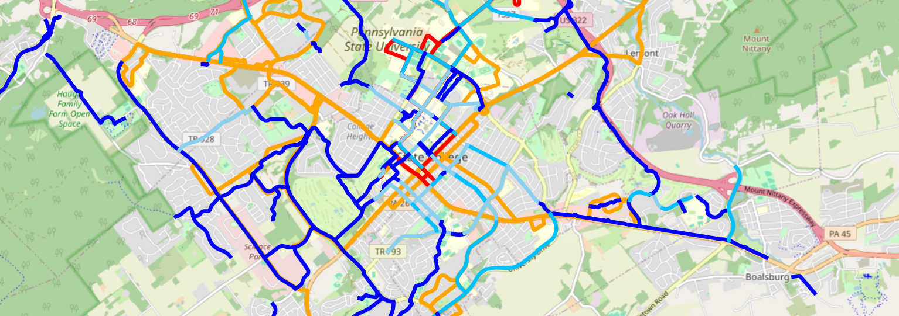

A 2019
CityLab study ranked State College as the #2 city in the nation for
car-free living. While this is probably a bit too optimistic, it is
certainly possible to do many things here without a car, using the
robust bus and bike networks.
This page aims to provide some practical information about getting
around the area without a car.

[ TODO: This map shows CATA, PSU shuttles, and all bike routes from CRCOG map. It is missing CATAGO, CATAGO Extended, and Spin zones. Should anything else be here? It is also very ugly and unreadable.
It probably would make sense to include this as an interactive map using Leaflet or similar. ]